At Tinkoff, content for each channel was made in its own tool: push, SMS and email in one place, banners in another, stories in a third. Together with the section's designer, I shaped Content Hub inside Touch: one canvas where copy editors, designers and technologists create and set up any type of creative. We tested it with 25 people from the three roles, and it is now live.
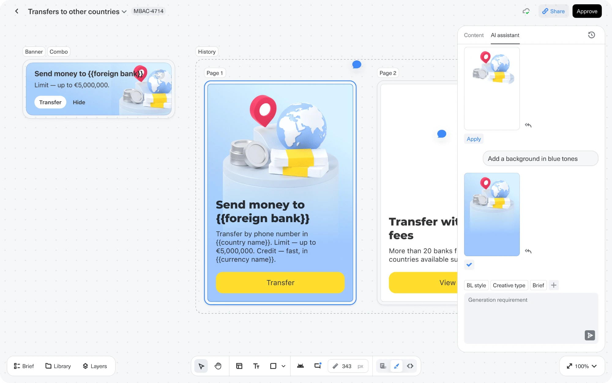
Content Hub canvas: the banner, story and push of one campaign, with the AI assistant and approval controls.
◆ Context
Touch, Tinkoff's internal platform for customer marketing (CVM: customer value management)
◆ Goal
Cut campaign Time to Market by reducing Time on Task for preparing and approving content across channels
◆ Constraints
Regulated financial communications; 3 roles in Content Hub: copy editor, designer, technologist; custom and template-based creative formats; transition period with Jira, Figma, chats, and existing constructors
◆ Research
3 sessions, 25 people; then product and architecture review
◆ My role
Lead Product Designer. Research, design reviews, shared vision and stakeholder defense with the section's designer
◆ Team
Product, engineering, content platform
◆ Scope
Shared creative canvas, role modes, AI assistant, versioning, comments, approval routing, asset library, JSON/substitution tooling, testing setup
◆ Metrics
Live. Target: Time on Task for preparing and approving content, within campaign Time to Market
◆ Tools
Figma, AI
Overview
Marketing teams at Tinkoff launch campaigns like Transfers to other countries: a banner, a two-page story and a push. Each creative passes through three roles. A copy editor writes the text, a designer builds the visuals, and a technologist prepares the creative for delivery in the app.
The campaign creation case gave the campaign a home in Touch. Content Hub is the next layer: a home for each creative inside the campaign, where the three roles create, review, version and test content for every channel. I'll follow the Transfers campaign through the new flow.
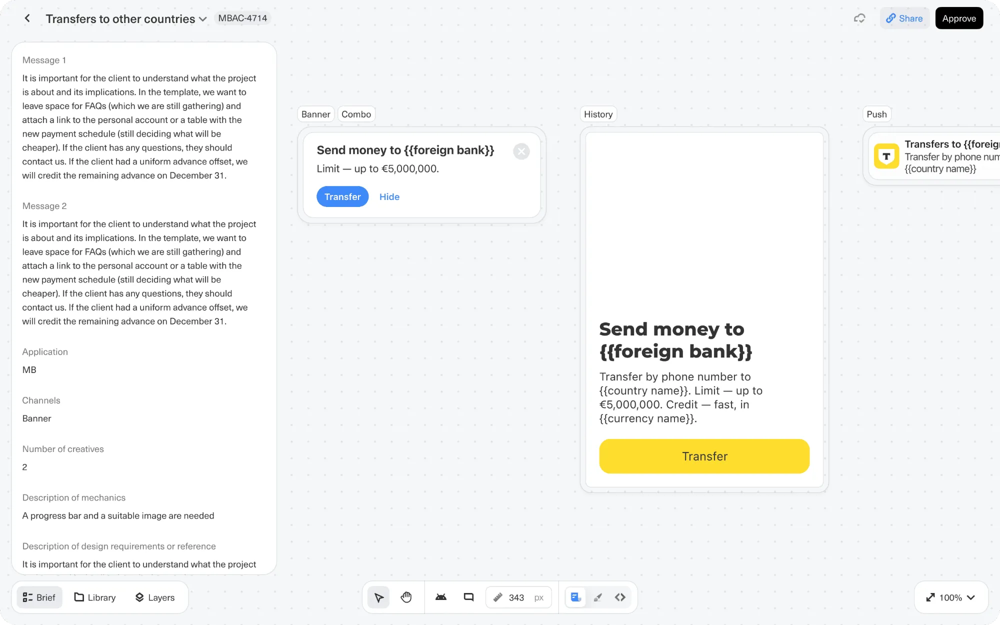
Copy editor workspace: the brief stays next to the banner, story and push previews, so nobody goes back to Jira or docs for context.
Problem
Three tools for one campaign. Creatives were made in different tools depending on the channel. Around them, briefs lived in Jira, copy in Google Docs, design in Figma and approvals in chats.
Context rebuilt at every handoff. Copy editors, designers and technologists worked on the same creative in different places. Each creative went through 1–3 mandatory approval rounds.
No audit trail. Comments, versions, references and approvals lived outside the creative, so it was hard to trace who decided what.
Little reuse. Reuse is one of the main ways to go faster, but previous creatives, styles, images, icons, videos and mechanics could not reliably become the starting point for the next campaign.
AI can't do it alone yet. Generated copy and images still need review and rework, so content production can't be fully automated.
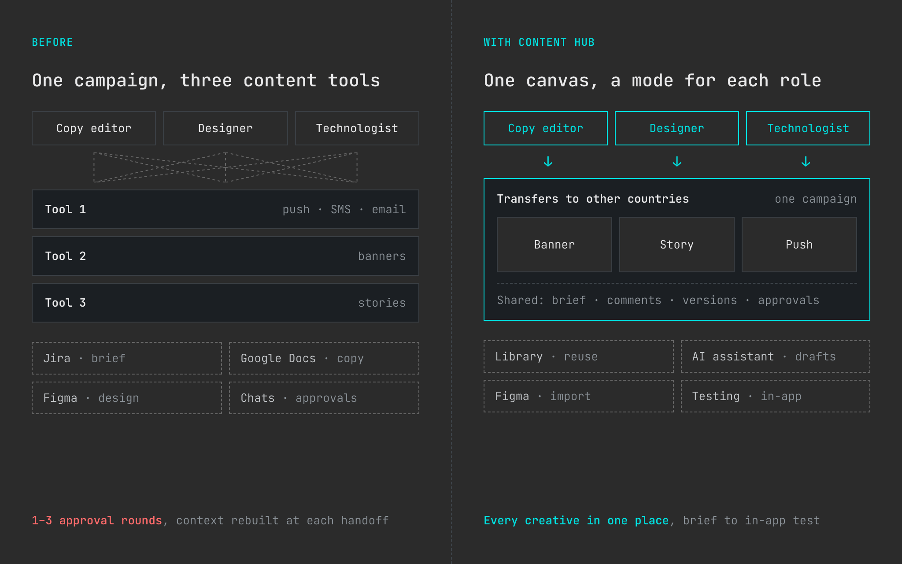
Before and after. The same campaign used to be split across three content tools, with briefs, copy, design and approvals in four more places. In Content Hub, all three roles work on one canvas.
Approach
We held three sessions, one per role: 8 technologists, 10 designers and 7 copy editors. Then we presented the concept to product and architecture leads. They accepted separate modes for each role without objections, and the team built them.
The key alignment point was not "everyone uses the same screen." It was "each participant can complete their job in one coherent place." Copy editors need message quality, facts, tone, variants, and optional customer review. Designers need visual control, libraries, resizing, layers, templates, and Figma import. Technologists need JSON, substitutions, actions, deeplinks, triggers, test groups, and bulk testing.
My role & team
I took part in the research, reviewed design decisions and shaped the vision for the section together with Alex, the designer who owns Content Hub. We presented the concept to stakeholders and defended it together.
Content Hub opens every creative of a campaign on one canvas. The screens follow the Transfers campaign: a banner, a two-page story (History on the screens) and a push. Content Hub creates these creatives from the brief and the campaign scenario. Then the copy editor, the designer and the technologist open the same creatives, each in their own mode.
Shared context. Every role works next to the same brief, shown on the editor screen above: the messages, channels, number of creatives and the mechanics the campaign needs. Comments and approval status are shared too.
Copy editor mode. The copy editor changes the title, subtitle and buttons in fields next to the preview. One switch applies an edit to every selected creative, so the banner, the story and the push say the same thing. For alternatives, the editor asks the AI assistant, for example for more general options, and every result is saved in the version history. Reviewers leave comments right on the creative. When a customer or partner needs to see the text, they get a link to view and comment.
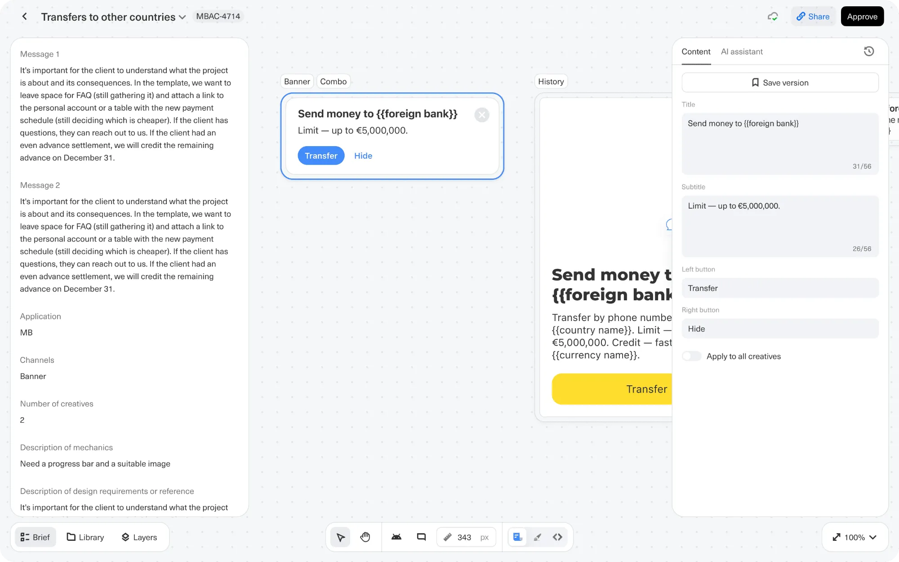
Copy editor mode: fields for the title, subtitle and buttons sit next to the brief. “Apply to all creatives” sends one edit to the whole set.
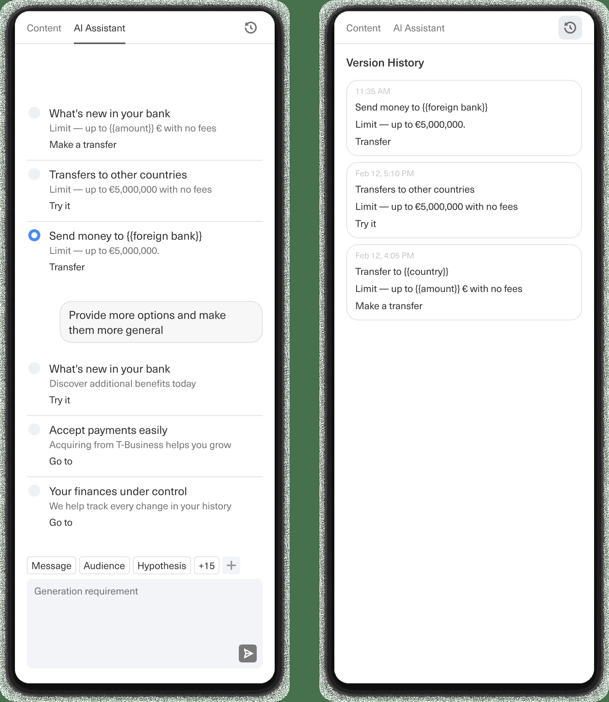
AI assistant and version history: the editor asks for more general options, and every version stays in the history for comparison.
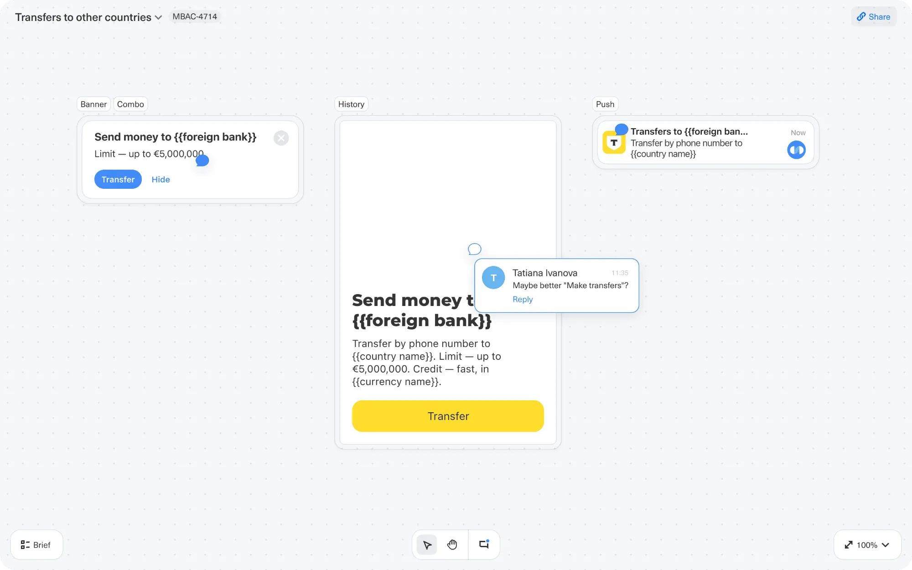
Comments: a reviewer suggests other wording right on the story, and the thread stays with the creative.
Designer mode. The designer opens the same creatives. Selecting an element on the story shows its position, spacing, fill and effects. The library keeps what was already made for the project: assets, styles, icons, images, video and templates for game mechanics. The layers panel shows the story as pages, containers, text and buttons. The AI assistant changes images on request: here it puts the illustration on a blue background, and the designer decides whether to use it. Custom work can still come in from Figma (see Decision 03 below).
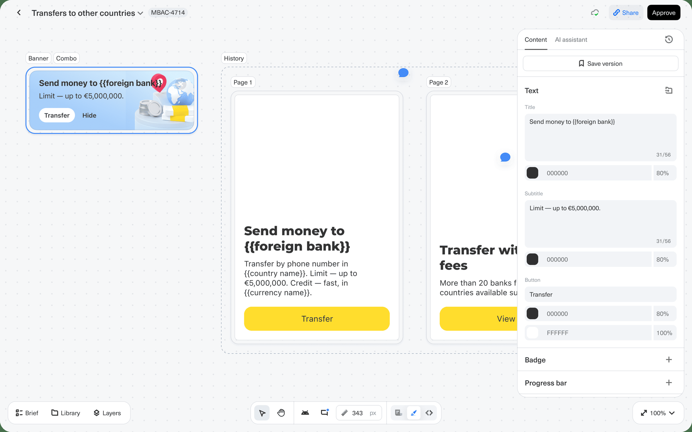
Designer mode: the selected text block on page 1 of the story gets its own position, spacing, fill and effects.
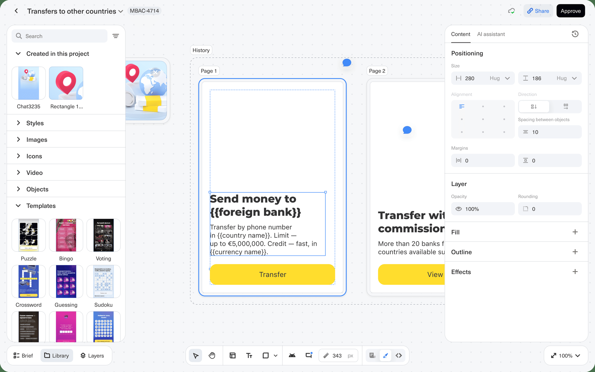
Library: assets made in this project, styles, icons, images, video and templates for game mechanics such as bingo, voting or sudoku.
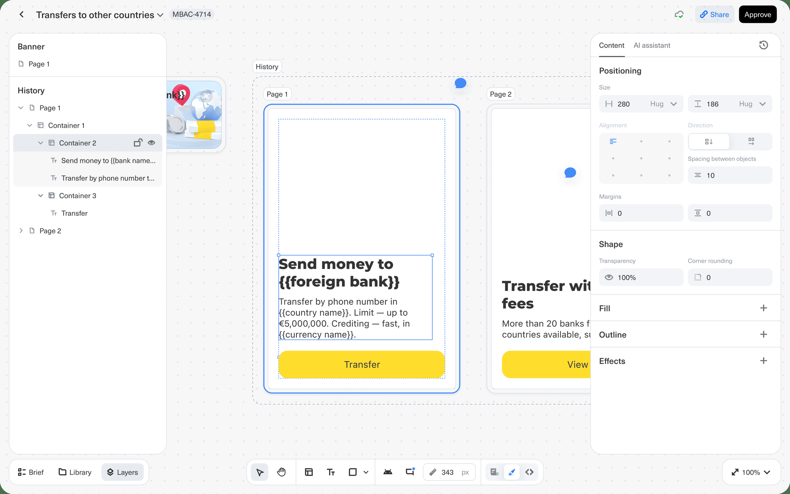
Layers: the story opens as pages, containers, text and buttons, so each element can be edited instead of a flat image.Designer AI assistant: the request “Add a background in blue tones” returns a new version, and the designer decides whether to use it.
Technologist mode. The technologist prepares creatives for delivery in the app. On the banner, the technologist adds a separate text for VIP clients, picked by a segment condition. Substitution generation turns placeholders in the copy into data fields, such as the bank name and the limit, and the JSON view shows what the app will receive. Next come actions: page 1 of the story leads to page 2, and the button opens a deeplink. Last, the testing panel sends the set to a tester’s phones, at a chosen place in the mobile bank and on a chosen trigger.
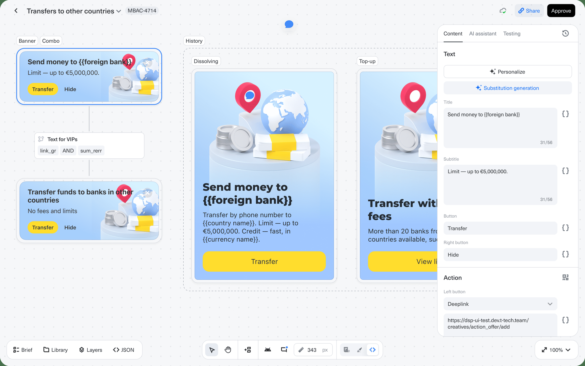
Technologist mode: the banner gets a separate version for VIP clients, picked by a segment condition. The copy still has placeholders, and the button already has a deeplink.
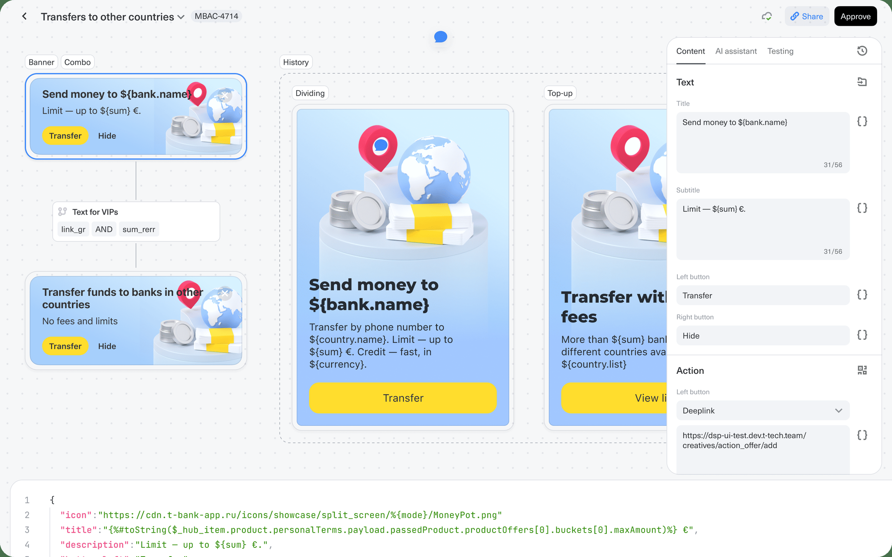
After substitution generation, placeholders become data fields such as ${bank.name} and ${sum}. The JSON view at the bottom shows what the app receives.
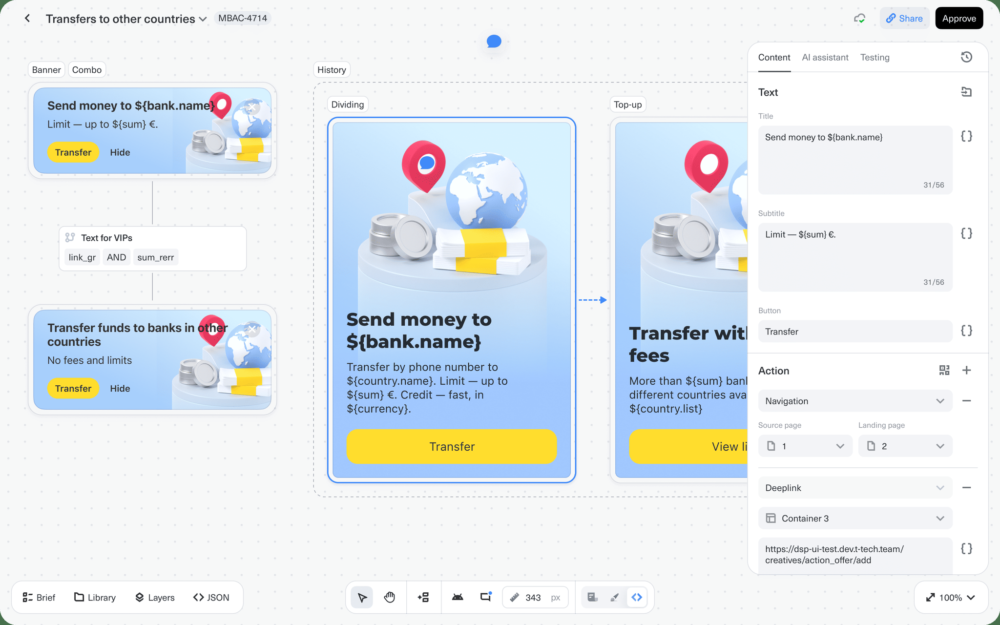
Actions: page 1 of the story leads to page 2, and the button opens a deeplink.
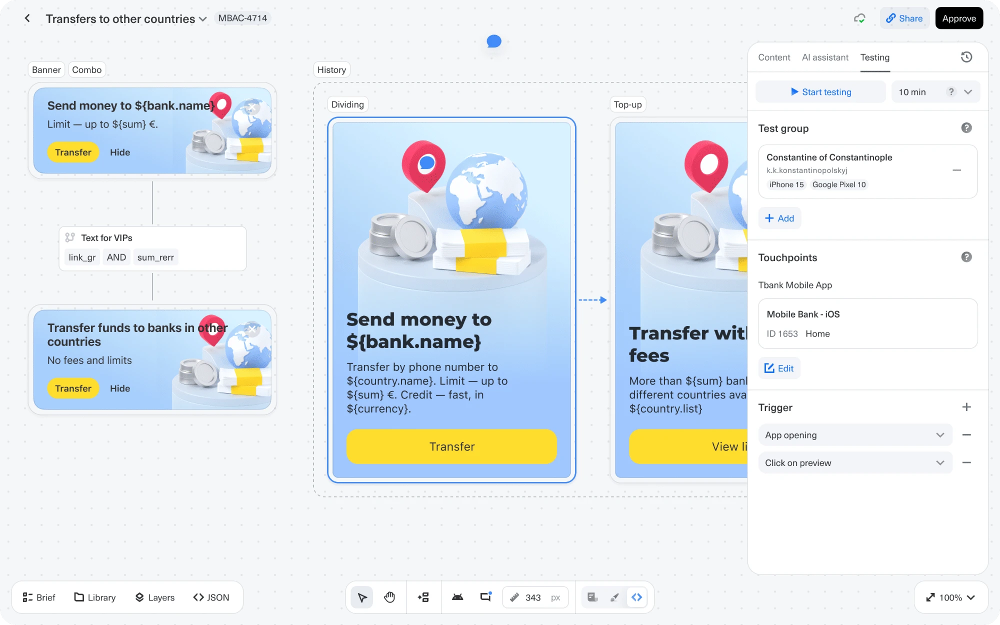
Testing: the set goes to a tester’s two phones, appears on the mobile bank’s home screen and shows on app opening or a tap on the preview.
Content memory. The agreed next step: once creatives are built, their assets, templates, revisions, generated variants, comments, approval state, campaign linkage and performance metadata become part of Content Hub. This turns production artifacts into reusable product data.
Key decisions
Decision 01 · Live
One canvas, a mode for each role
Why
Creatives for different channels were made in different tools, and in the sessions each role described a different job. Copy editors care about tone and facts, designers about visual control, technologists about substitutions, deeplinks and testing.
How
Any type of creative, from a push to a story, opens on the same canvas. Each role switches to its own mode with its own panel. The brief, comments and approval status stay shared.
Instead of
One universal editor with every control for everyone.
Decision 02 · Changed after research
AI drafts, a specialist decides
Why
Generated copy and images still need review and rework, so content production can't be automated end to end.
How
Each mode has an AI assistant: copy variants for editors, backgrounds and resizing for designers. Every generated version is saved and can be compared. A specialist approves the final creative.
Changed after the sessions
Sending every AI-assisted text back to the customer for re-approval became optional instead of mandatory.
Decision 03
Figma stays as a way out
Why
Some creatives are custom work that a built-in editor will not cover.
How
Designers can import finished work from Figma and continue in Content Hub.
Instead of
Forcing every task into the built-in editor.
Impact
Live in production. Content production lives inside Touch as the campaign's production workspace, instead of another separate tool.
Decisions from the sessions. Keep role-specific modes, make AI assistive, preserve Figma import for custom work, support optional external review, and plan for role permissions.
Main open risk: architecture. Next steps depend on a strong content data model, versioning, template strategy and integrations with existing systems during the transition period.
Next: fewer roles. For some communications, the person who requests the campaign should be able to prepare the content without a handoff.
Learnings
Shared canvas, separate surfaces. One workspace works only when each role keeps its own focused mode. The sessions showed that the three roles care about different things, even when they work on the same creative.
Bring in a technical partner early. The meetings made the UX target clearer, but also showed where the data model, roles, template architecture and testing workflows need deeper design.